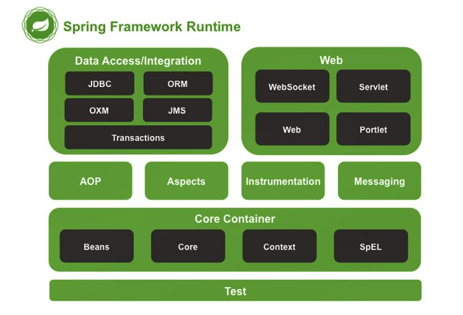
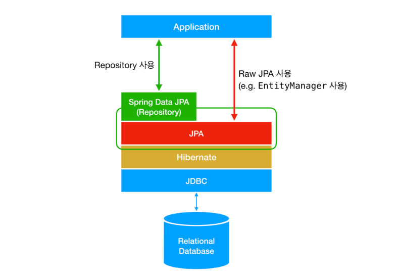

Java Spring Framework

Giới thiệu
Spring Framework là một trong những framework mạnh mẽ và phổ biến nhất trong hệ sinh thái Java.
Nó giúp các lập trình viên xây dựng ứng dụng **linh hoạt, dễ bảo trì, và mở rộng nhanh chóng** nhờ triết lý “Inversion of Control” (IoC) và “Dependency Injection” (DI).
Nếu bạn từng thấy việc khởi tạo, cấu hình và quản lý các đối tượng trong dự án Java trở nên phức tạp, Spring chính là giải pháp tối ưu hóa mọi thứ đó.
Bài viết này sẽ hướng dẫn bạn hiểu các khái niệm cốt lõi của Spring, cách Spring Boot đơn giản hóa phát triển ứng dụng, và cách xây dựng RESTful API nhanh chóng chỉ trong vài dòng code.
1. Spring Framework là gì?
Spring là một framework mã nguồn mở (open-source) hỗ trợ phát triển ứng dụng Java một cách toàn diện — từ tầng dữ liệu, logic nghiệp vụ đến tầng web.
Mục tiêu chính của Spring là **giảm sự phụ thuộc giữa các thành phần trong ứng dụng**. Thay vì các class tự tạo và quản lý đối tượng, Spring sẽ tự động khởi tạo và “tiêm” (inject) chúng vào nơi cần thiết.
“Spring giống như một ‘nhạc trưởng’ — điều phối mọi đối tượng trong ứng dụng của bạn hoạt động hài hòa.”
Hình trên minh họa kiến trúc tổng thể của Spring Framework — một framework mã nguồn mở hỗ trợ phát triển ứng dụng Java toàn diện từ tầng dữ liệu đến tầng web.
1. Core Container:
Bao gồm các thành phần Beans, Core, Context, và SpEL (Spring Expression Language).
Đây là “trái tim” của Spring, chịu trách nhiệm quản lý và
tiêm phụ thuộc (Dependency Injection),
giúp giảm sự phụ thuộc giữa các lớp trong ứng dụng.
2. Data Access/Integration:
Gồm các mô-đun JDBC, ORM, OXM, JMS, và Transactions.
Các thành phần này hỗ trợ làm việc với cơ sở dữ liệu, giao dịch
và tích hợp với các hệ thống khác.
3. Web Module:
Bao gồm Servlet, WebSocket, Portlet, và Web.
Đây là phần cho phép xây dựng các ứng dụng web linh hoạt,
trong đó có mô hình Spring MVC.
4. AOP, Aspects, Instrumentation & Messaging:
Các mô-đun này mở rộng khả năng lập trình hướng khía cạnh (AOP),
hỗ trợ xử lý thông điệp và công cụ giám sát, giúp quản lý mã nguồn hiệu quả hơn.
5. Test Module:
Cung cấp công cụ và thư viện để kiểm thử ứng dụng Spring,
đảm bảo chất lượng, độ tin cậy và ổn định của toàn bộ hệ thống.
2. Dependency Injection (DI) – Trái tim của Spring
Dependency Injection là cơ chế cho phép Spring tự động cung cấp (inject) các đối tượng phụ thuộc vào class khác, giúp giảm sự gắn kết (coupling) giữa các module.
Thay vì:
public class UserService {
private UserRepository userRepository = new UserRepository();
}Bạn có thể viết:
@Service
public class UserService {
private final UserRepository userRepository;
@Autowired
public UserService(UserRepository userRepository) {
this.userRepository = userRepository;
}
}
Ở đây, Spring sẽ tự động “tiêm” UserRepository vào UserService mà bạn không cần khởi tạo thủ công.
Điều này giúp việc test, bảo trì và thay đổi code dễ dàng hơn rất nhiều.
3. Inversion of Control (IoC)
IoC là nguyên lý cốt lõi của Spring, nơi mà việc **quản lý vòng đời của các đối tượng** (bean) được chuyển giao cho framework.
Tất cả các bean được Spring quản lý nằm trong IoC Container, và được khai báo bằng annotation (@Component, @Service, @Repository) hoặc trong file cấu hình XML.
4. Spring Boot – Cách nhanh nhất để bắt đầu
Spring Boot ra đời để đơn giản hóa việc khởi tạo và cấu hình ứng dụng Spring truyền thống. Không cần cấu hình XML phức tạp — chỉ cần vài annotation, bạn có thể chạy ứng dụng backend trong vài giây.
@SpringBootApplication
public class DemoApplication {
public static void main(String[] args) {
SpringApplication.run(DemoApplication.class, args);
}
}Khi chạy, Spring Boot tự động:
- Tạo IoC Container và quản lý bean.
- Cấu hình server (Tomcat) mặc định.
- Quét các component trong project.
- Hỗ trợ build REST API, JPA, Security chỉ với một vài dependency.
5. Xây dựng RESTful Web Services với Spring Boot
Một trong những tính năng mạnh mẽ nhất của Spring Boot là xây dựng **REST API** cực nhanh. Dưới đây là ví dụ đơn giản:
@RestController
@RequestMapping("/api")
public class HelloController {
@GetMapping("/hello")
public String sayHello() {
return "Xin chào từ Spring Boot!";
}
}
Chạy ứng dụng và truy cập http://localhost:8080/api/hello, bạn sẽ thấy kết quả trả về từ API mà không cần thêm bất kỳ cấu hình server nào.
“Spring Boot biến việc viết API trở nên đơn giản như viết một dòng println().”
6. Spring và tầng dữ liệu (Spring Data JPA)
Với module Spring Data JPA, bạn có thể tương tác với cơ sở dữ liệu mà không cần viết câu SQL dài dòng. Chỉ cần định nghĩa interface:
public interface UserRepository extends JpaRepository<User, Long> {
List<User> findByName(String name);
}Spring Boot sẽ tự động tạo các truy vấn tương ứng nhờ vào tên phương thức — cực kỳ tiện lợi và tiết kiệm thời gian.

Hình trên minh họa luồng hoạt động của Spring Data JPA trong tầng dữ liệu — giúp lập trình viên tương tác với cơ sở dữ liệu quan hệ (Relational Database) mà không cần viết câu lệnh SQL phức tạp.
1️⃣ JDBC (Java Database Connectivity)
Đây là tầng thấp nhất, chịu trách nhiệm kết nối trực tiếp đến cơ sở dữ liệu.
JDBC cung cấp các API để gửi câu lệnh SQL và nhận kết quả trả về.
2️⃣ Hibernate (ORM – Object Relational Mapping)
Nằm phía trên JDBC, Hibernate giúp ánh xạ (mapping) giữa
các đối tượng Java và các bảng trong cơ sở dữ liệu.
Nhờ đó, lập trình viên có thể làm việc với đối tượng thay vì viết SQL thủ công.
3️⃣ JPA (Java Persistence API)
Là một chuẩn giao tiếp giữa ứng dụng Java và các framework ORM như Hibernate.
JPA định nghĩa các quy tắc và annotation giúp thao tác dữ liệu trở nên thống nhất, dễ mở rộng.
4️⃣ Spring Data JPA
Là tầng cao nhất, cung cấp một lớp trừu tượng (Repository Layer).
Với Spring Data JPA, lập trình viên chỉ cần định nghĩa các interface
mở rộng từ JpaRepository để thực hiện CRUD —
mà không cần viết bất kỳ câu SQL nào.
7. Ưu điểm của Spring Framework
- Giảm sự phụ thuộc giữa các module nhờ DI.
- Dễ mở rộng, dễ test, dễ bảo trì.
- Tích hợp mạnh mẽ với Hibernate, JPA, Security, Kafka, v.v.
- Spring Boot giúp khởi chạy ứng dụng chỉ trong vài giây.
- Cộng đồng lớn, tài liệu phong phú, cập nhật liên tục.
8. Tổng kết
Spring Framework là lựa chọn hàng đầu cho các lập trình viên Java khi xây dựng ứng dụng web, microservice hoặc hệ thống doanh nghiệp.
Việc hiểu và áp dụng **Dependency Injection**, **IoC Container** và **Spring Boot** sẽ giúp bạn tiết kiệm hàng chục giờ cấu hình và phát triển.
👉 Hãy bắt đầu với một project Spring Boot nhỏ — tạo một REST API đơn giản, thêm tầng dữ liệu JPA — bạn sẽ hiểu ngay vì sao Spring được gọi là “xương sống của Java backend”.
“Học Spring là bước chuyển mình từ lập trình Java cơ bản sang xây dựng hệ thống chuyên nghiệp.”